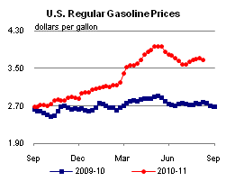
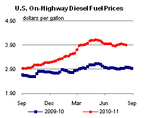
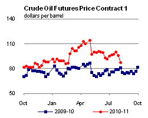
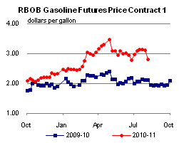
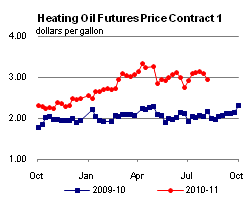
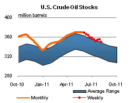
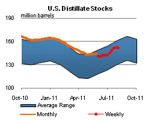
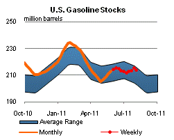
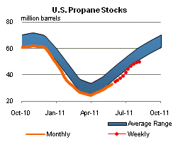

Released: August 10, 2011
Next Release: August 17, 2011
Forecasting in a volatile market
Average crude oil prices fell steeply between the end of July and August 9, when the U.S. Energy Information Administration (EIA) released its latest Short-Term Energy Outlook (STEO). Front-month West Texas Intermediate (WTI) future prices declined by $16 per barrel, Brent futures retreated by $14 per barrel, while the OPEC Basket price fell $11 per barrel. Anyone looking, however, for a comparable reduction in the STEO's oil price projections for 2011 and 2012 would not find it there. Instead, EIA in the current STEO cut its WTI price and Average Refiner Acquisition Cost projections for August by $10 and $9 per barrel, respectively, and by progressively lesser amounts for the remainder of the year. For the first half of 2012, the WTI price forecast is reduced by $2 per barrel each month and just $1 per barrel for each of the months in the second half of the year. The Average Refiner Acquisition Cost forecast is trimmed by $1 per barrel for the first half of 2012 and left unchanged for the second half of the year.
During recent oil rallies, market watchers have at times found it hard to reconcile large price swings with narrowly defined market "fundamentals," i.e., measurable shifts in oil inventory levels or changes in short-term oil supply and demand balances. Analysts have suggested that the appearance of a "disconnect" between prices and fundamentals could stem from the larger impact of broader factors, such as changes in longer-term market expectations. A similar point may be made about the latest price drop. Although recent U.S. and other data - including weak U.S. product deliveries and signs of a rebound in commercial crude inventories following the release of crude from strategic reserves - do point to softening oil market conditions, they do not seem fully to explain the scope and speed of the selloff, which came as a surprise to many market participants. Here again, the magnitude of the price swing may have less to do with incremental changes in oil statistics than with a broader, sweeping shift in the market's perception of the health of the global economy and longer-term expectations of underlying macro-economic conditions. Widely publicized difficulties in U.S. government negotiations about debt limits, the downgrading of U.S. debt by one rating agency, renewed credit concerns in Europe, concerns about the persistence of high unemployment and a host of worse-than-expected economic indicators, including unexpectedly low growth for first-half 2011 U.S. GDP, all have contributed, in various ways, to a broad deterioration of market sentiment and less upbeat expectations of future economic growth. Some analysts have expressed pessimism regarding the strength of China's growth as well. These renewed concerns have a broad price impact not just on oil markets, but also on other commodity markets as well as equity and fixed-income markets.
This month's STEO still assumes U.S. real gross domestic product (GDP) growth of 2.4 percent this year and 2.6 percent in 2012, and oil consumption-weighted world GDP growth of 3.4 percent and 4.1 percent, respectively, for that period. Reductions in forecast oil prices over the next few months reflect the recent sell-off and acknowledge the fact that current market sentiment has become less supportive of high prices. The current STEO stops short, however, of factoring in steep downward revisions in the economic growth outlook at this stage and continues to assume robust economic and oil demand growth outside of the Organisation for Economic Co-operation and Development. Price projections also reflect expectations that current supply constraints - including a near total disruption in Libyan exports -will continue for much of the forecast period, and the persistence of political risk to oil supply in a number of producer countries.
There is, however, a significant downside risk for petroleum prices and the STEO forecast if current economic and financial market concerns become more widespread or take hold. Cuts in economic and oil-demand growth forecasts or fallout from continuing financial market turbulence could exert further and more sustained downward pressure on oil prices than is reflected in the current STEO. EIA will closely monitor both energy market performance and underlying economic conditions and revise our projections of global oil balances and oil prices as warranted by updated forecasts over the coming months.
Both the STEO and the accompanying Market Prices and Uncertainty Report (MPUR) emphasize the potential volatility of crude oil prices. Confidence intervals for WTI futures prices are calculated from the futures contract options market. In the July STEO, the lower and upper limits of the 95-percent confidence interval for the September WTI futures contract (over the 5-day period ending July 7) were $81 per barrel and $116 per barrel, respectively. The lower limit of that WTI confidence interval in the July MPUR was reached in futures market trading on Monday, August 8. The last times the upper and lower limits of the 95-percent confidence interval were met or passed were in the price run-up in the first half of 2008 and the subsequent price collapse over the second half of 2008. In the August STEO and MPUR, the lower and upper limits of the 95-percent confidence interval for the October WTI futures contract (over the 5-day period ending August 4) are $75 per barrel and $116 per barrel, respectively.
Gasoline and diesel prices drop, but remain above year-ago levels
The U.S. average retail price of regular gasoline fell for the first time in six weeks, losing almost four cents to reach $3.67 per gallon. The average price is $0.89 per gallon higher than last year at this time. The largest decrease came in the Midwest, where the price was down more than a nickel on the week. Following closely, the Gulf Coast price fell over four cents and became the least expensive regional price in the country at $3.56 per gallon. The average price on the East Coast lost about four cents from last week, while the West Coast average price was down almost a penny and remained the highest in the country at $3.75 per gallon. The Rocky Mountains saw the only regional price increase, gaining just under a penny per gallon.
The national average diesel price decreased for the second consecutive week, falling four cents to $3.90 per gallon. The diesel price is $0.91 per gallon higher than last year at this time. The West Coast led declines for the second week, falling just over a nickel per gallon. The East Coast, Midwest, and Gulf Coast average diesel prices each dropped about four cents per gallon versus last week. The Rocky Mountains had the smallest price decrease of less than one cent per gallon.
Propane inventories build slightly
Total U.S. inventories of propane gained 0.2 million barrels during the week ending August 5 to end at 49.6 million barrels. The East Coast and Midwest regions each dropped by 0.1 million barrels, while the Rocky Mountain/West Coast region added 0.1 million barrels. The largest stock build occurred in the Gulf Coast region, with 0.4 million barrels of new propane stocks. Propylene non-fuel use inventories represented 4.9 percent of total propane inventories.
Text from the previous editions of This Week In Petroleum is accessible through a link at the top right-hand corner of this page.
|  |  | ||||||
| Retail Data | Changes From | Retail Data | Changes From | ||||
| 08/08/11 | Week | Year | 08/08/11 | Week | Year | ||
| Gasoline | 3.674 | Diesel Fuel | 3.897 | ||||
|  |  | ||||||||||||||||||||||||||
|
 | ||||||||||||||||||||||||||
| *Note: Crude Oil Price in Dollars per Barrel. | |||||||||||||||||||||||||||
|  |  | ||||||
|  |  | ||||||
| Stocks Data | Changes From | Stocks Data | Changes From | ||||
| 08/05/11 | Week | Year | 08/05/11 | Week | Year | ||
| Crude Oil | 349.8 | Distillate | 151.5 | ||||
| Gasoline | 213.6 | Propane | 49.595 | ||||